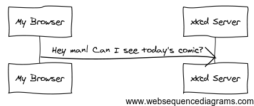

Les fondamentaux de Symfony2 et HTTP¶
Félicitations! Grâce à l’apprentissage de Symfony2, vous êtes sur la bonne voie pour devenir un développeur web plus productif et populaire (en fait vous serez livré à vous-même pour la dernière partie). Symfony2 est construit de manière à revenir à l’essentiel : implémenter des outils qui vous aident à développer plus rapidement et à construire des applications plus robustes, sans pour autant vous gêner dans votre progression. Symfony repose sur les meilleures idées provenant de diverses technologies : les outils et concepts que vous êtes sur le point d’apprendre représentent les efforts de milliers de personnes depuis de nombreuses années. En d’autres termes, vous n’apprenez pas juste “Symfony”, vous apprenez les fondamentaux du web, les bonnes pratiques de développement, et comment utiliser de nombreuses nouvelles bibliothèques PHP, internes ou indépendantes de Symfony2. Alors, soyez prêt !
Fidèle à la philosophie de Symfony2, ce chapitre débute par une explication du concept fondamental du développement web : HTTP. Quelles que soient vos connaissances ou votre langage de programmation préféré, ce chapitre doit être lu par tout un chacun.
HTTP est Simple¶
HTTP (HyperText Transfer Protocol pour les geeks) est un langage texte qui permet à deux machines de communiquer ensemble. C’est tout ! Par exemple, lorsque vous regardez la dernière BD de xkcd, la conversation suivante (approximative) se déroule:

Et alors que l’actuel langage utilisé est un peu plus formel, cela reste toujours très simple. HTTP est le terme utilisé pour décrire ce simple langage basé sur le texte. Et peu importe comment vous développez sur le web, le but de votre serveur est toujours de comprendre de simples requêtes composées de texte, et de retourner de simples réponses composées elles aussi de texte.
Symfony2 est construit sur les bases de cette réalité. Que vous le réalisiez ou non, HTTP est quelque chose que vous utilisez tous les jours. Avec Symfony2, vous allez apprendre comment le maîtriser.
Etape 1: Le Client envoie une Requête¶
Chaque conversation sur le web débute avec une requête. La requête est un message textuel créé par un client (par exemple: un navigateur, une application iPhone, etc...) dans un format spécial connu sous le nom d’HTTP. Le client envoie cette requête à un serveur, et puis attend la réponse.
Jetez un oeil à la première partie de l’intéraction (la requête) entre un navigateur et le serveur web xkcd:
Dans le langage HTTP, cette requête HTTP ressemblerait à quelque chose comme ça:
GET / HTTP/1.1
Host: xkcd.com
Accept: text/html
User-Agent: Mozilla/5.0 (Macintosh)
Ce simple message communique tout ce qui est nécessaire concernant la ressource que le client a demandée. La première ligne d’une requête HTTP est la plus importante et contient deux choses: l’URI et la méthode HTTP.
L’URI (par exemple: /, /contact, etc...) est l’adresse unique ou la localisation qui identifie la ressource que le client veut. La méthode HTTP (par exemple: GET) définit ce que vous voulez faire avec la ressource. Les méthodes HTTP sont les verbes de la requête et définissent les quelques moyens avec lesquels vous pouvez agir sur la ressource:
| GET | Récupère la ressource depuis le serveur |
| POST | Crée une ressource sur le serveur |
| PUT | Met à jour la ressource sur le serveur |
| DELETE | Supprime la ressource sur le serveur |
Avec ceci en mémoire, vous pouvez imaginer ce à quoi ressemblerait une requête HTTP pour supprimer une entrée spécifique d’un blog, par exemple:
DELETE /blog/15 HTTP/1.1
Note
Il y a en fait neuf méthodes HTTP définies par la spécification HTTP, mais beaucoup d’entre elles ne sont pas largement utilisées ou supportées. En réalité, beaucoup de navigateurs modernes ne supportent pas les méthodes PUT et DELETE.
En plus de la première ligne, une requête HTTP contient invariablement d’autres lignes d’informations appelées en-têtes de requête. Les en-têtes peuvent fournir un large éventail d’informations telles que l’en-tête Host, le format de réponse que le client accepte (Accept) et l’application que le client utilise pour effectuer la requête (User-Agent). Beaucoup d’autres en-têtes existent et peuvent être trouvées sur la page Wikipedia List of HTTP header fields (anglais).
Etape 2: Le Serveur retourne une réponse¶
Une fois que le serveur a reçu la requête, il connaît exactement quelle ressource le client a besoin (via l’URI) et ce que le client souhaite faire avec cette ressource (via la méthode). Par exemple, dans le cas d’une requête GET, le serveur prépare la ressource et la retourne dans une réponse HTTP. Considérez la réponse du serveur web xkcd :
Traduit en HTTP, la réponse envoyée au navigateur va ressembler à quelque chose comme ça :
HTTP/1.1 200 OK
Date: Sat, 02 Apr 2011 21:05:05 GMT
Server: lighttpd/1.4.19
Content-Type: text/html
<html>
<!-- HTML for the xkcd comic -->
</html>
La réponse HTTP contient la ressource demandée (le contenu HTML dans ce cas), ainsi que d’autres informations à propos de la réponse. La première ligne est spécialement importante et contient le code de statut de la réponse HTTP (200 dans ce cas). Le code de statut communique le résultat global de la requête retournée au client. A-t-elle réussi ? Y’a-t-il eu une erreur ? Différents codes de statut existent qui indiquent le succès, une erreur, ou que le client a besoin de faire quelque chose (par exemple: rediriger sur une autre page). Une liste complète peut être trouvée sur la page Wikipedia List of HTTP status codes (anglais).
Comme la requête, une réponse HTTP contient de l’information additionnelle appelée en-têtes HTTP. Par exemple, une importante en-tête de réponse HTTP est le Content-Type. Le corps d’une même ressource peut être retournée dans de multiples formats incluant HTML, XML ou JSON pour en nommer quelques uns. L’en-tête Content-Type dit au client quel format va être retourné.
De nombreuses autres en-têtes existent, dont quelques unes sont très puissantes. Par exemple, certaines en-têtes peuvent être utilisées pour créer un puissant système de cache.
Requêtes, Réponses et Développement Web¶
Cette conversation requête-réponse est le procédé fondamental qui dirige toute communication sur le web. Et tout aussi important et puissant que ce procédé soit, il est inéluctablement simple.
Le plus important fait est : quel que soit le langage que vous utilisez, le type d’application que vous construisez (web, mobile, API JSON), ou la philosophie de développement que vous suivez, l’objectif final d’une application est toujours de comprendre chaque requête et de créer et retourner la réponse appropriée.
Symfony est conçu pour correspondre à cette réalité.
Tip
Pour en savoir plus à propos de la spécification HTTP, lisez l’original HTTP 1.1 RFC ou le HTTP Bis, qui est un effort actif pour clarifier la spécification originale. Un super outil pour inspecter/vérifier les en-têtes de la requête et de la réponse durant votre navigation est l’extension pour Firefox Live HTTP Headers.
Requêtes et réponses en PHP¶
Alors comment intéragissez-vous avec la «requête» et créez-vous la «réponse» quand vous utilisez PHP ? En réalité, PHP vous abstrait une partie du processus global :
<?php
$uri = $_SERVER['REQUEST_URI'];
$foo = $_GET['foo'];
header('Content-type: text/html');
echo 'L'URI demandée est: '.$uri;
echo 'La valeur du paramètre "foo" est: '.$foo;
Aussi étrange que cela puisse paraître, cette petite application utilise les informations de la requête HTTP afin de créer une réponse. Plutôt que d’analyser le message texte de la requête HTTP directement, PHP prépare des variables superglobales telles que $_SERVER et $_GET qui contiennent toute l’information de la requête. De même, au lieu de retourner la réponse texte HTTP formatée, vous pouvez utiliser la fonction header() pour créer des en-têtes de réponse et simplement délivrer le contenu actuel qui sera la portion «contenu» du message de la réponse. PHP va ainsi créer une véritable réponse HTTP et la retourner au client :
HTTP/1.1 200 OK
Date: Sat, 03 Apr 2011 02:14:33 GMT
Server: Apache/2.2.17 (Unix)
Content-Type: text/html
L'URI demandée est: /testing?foo=symfony
La valeur du paramètre "foo" est: symfony
Requêtes et Réponses dans Symfony¶
Symfony fournit une alternative à l’approche basique de PHP via deux classes qui vous permettent d’intéragir avec la requête et la réponse HTTP de manière plus facile. La classe Symfony\Component\HttpFoundation\Request est une simple représentation orientée objet du message de la requête HTTP. Avec elle, vous avez toute l’information de la requête à votre portée :
use Symfony\Component\HttpFoundation\Request;
$request = Request::createFromGlobals();
// l'URI demandée (par exemple: /about) sans aucun paramètre
$request->getPathInfo();
// obtenir respectivement des variables GET et POST
$request->query->get('foo');
$request->request->get('bar', 'valeur par défaut si bar est inexistant');
// obtenir les variables SERVER
$request->server->get('HTTP_HOST');
// obtenir une instance de UploadedFile identifiée par foo
$request->files->get('foo');
// obtenir la valeur d'un COOKIE value
$request->cookies->get('PHPSESSID');
// obtenir un entête de requête HTTP request header, normalisé en minuscules
$request->headers->get('host');
$request->headers->get('content_type');
$request->getMethod(); // GET, POST, PUT, DELETE, HEAD
$request->getLanguages(); // un tableau des langues que le client accepte
En bonus, la classe Request effectue beaucoup de travail en arrière-plan dont vous n’aurez jamais à vous soucier. Par exemple, la méthode isSecure() vérifie les trois valeurs PHP qui peuvent indiquer si oui ou non l’utilisateur est connecté via une connexion sécurisée (i.e. https).
Symfony fournit aussi une classe Response : une simple représentation PHP du message d’une réponse HTTP. Cela permet à votre application d’utiliser une interface orientée objet pour construire la réponse qui doit être retournée au client:
use Symfony\Component\HttpFoundation\Response;
$response = new Response();
$response->setContent('<html><body><h1>Hello world!</h1></body></html>');
$response->setStatusCode(200);
$response->headers->set('Content-Type', 'text/html');
// affiche les en-têtes HTTP suivies du contenu
$response->send();
Si Symfony n’offre rien d’autre, vous devriez néanmoins déjà avoir en votre possession une boîte à outils pour accéder facilement aux informations de la requête et une interface orientée objet pour créer la réponse. Bien que vous appreniez les nombreuses et puissantes fonctions de Symfony, gardez à l’esprit que le but de votre application est toujours d’interpréter une requête et de créer la réponse appropriée basée sur votre logique applicative.
Tip
Les classes Request et Response font partie d’un composant autonome inclus dans Symfony appelé HttpFoundation. Ce composant peut être utilisé de manière entièrement indépendante de Symfony et fournit aussi des classes pour gérer les sessions et les uploads de fichier.
Le Parcours de la Requête à la Réponse¶
Comme HTTP lui-même, les objets Request et Response sont assez simples. La partie difficile de la création d’une application est d’écrire ce qui vient entre les deux. En d’autres mots, le réel travail commence lors de l’écriture du code qui interprète l’information de la requête et crée la réponse.
Votre application fait probablement beaucoup de choses comme envoyer des emails, gérer des soumissions de formulaires, enregistrer des «trucs» dans votre base de données, délivrer des pages HTML et protéger du contenu de façon sécurisée. Comment pouvez-vous vous occuper de tout cela tout en conservant votre code organisé et maintenable ?
Symfony a été créé pour résoudre ces problématiques afin que vous n’ayez pas à le faire vous-même.
Le Contrôleur Frontal¶
Traditionnellement, les applications étaient construites de telle sorte que chaque «page» d’un site avait son propre fichier physique :
index.php
contact.php
blog.php
Il y a plusieurs problèmes avec cette approche, incluant la non-flexibilité des URLs (que se passait-il si vous souhaitiez changer blog.php en news.php sans que tous vos liens existants ne cessent de fonctionner ?) et le fait que chaque fichier doive manuellement inclure tout un ensemble de fichiers coeurs pour que la sécurité, les connexions à la base de données et le «look» du site puissent rester consistents.
Une bien meilleure solution est d’utiliser un simple fichier PHP appelé contrôleur frontal: qui s’occupe de chaque requête arrivant dans votre application. Par exemple:
| /index.php | exécute index.php |
| /index.php/contact | exécute index.php |
| /index.php/blog | exécute index.php |
Tip
En utilisant la fonction mod_rewrite d’Apache (ou son équivalent avec d’autres serveurs web), les URLs peuvent être facilement réécrites afin de devenir simplement /, /contact et /blog.
Maintenant, chaque requête est gérée exactement de la même façon. Plutôt que d’avoir des URLs individuelles exécutant des fichiers PHP différents, le contrôleur frontal est toujours exécuté, et le routage («routing») des différentes URLs vers différentes parties de votre application est effectué en interne. Cela résoud les deux problèmes de l’approche originale. Presque toutes les applications web modernes font ça - incluant les applications comme WordPress.
Rester Organisé¶
Mais à l’intérieur de votre contrôleur frontal, comment savez-vous quelle page devrait être rendue et comment pouvez-vous délivrer chacune d’elles de façon «saine» ? D’une manière ou d’une autre, vous allez devoir inspecter l’URI entrante et exécuter les différentes parties de votre code dépendant de cette valeur. Cela peut rapidement devenir moche :
// index.php
$request = Request::createFromGlobals();
$path = $request->getPathInfo(); // the URL being requested
if (in_array($path, array('', '/')) {
$response = new Response('Welcome to the homepage.');
} elseif ($path == '/contact') {
$response = new Response('Contact us');
} else {
$response = new Response('Page not found.', 404);
}
$response->send();
Résoudre ce problème peut être difficile. Heureusement, c’est exactement ce pourquoi Symfony a été conçu.
Le Déroulement d’une Application Symfony¶
Quand vous laissez Symfony gérer chaque requête, la vie est beaucoup plus facile. Symfony suit un schema simple et identique pour toutes les requêtes:
Les requêtes entrantes sont interprétées par le routing et passées aux fonctions des contrôleurs qui retournent des objets Response.
Chaque «page» de votre site est définie dans un fichier de configuration du routing qui relie différentes URLs à différentes fonctions PHP. Le travail de chaque fonction PHP, appelée contrôleur, est d’utiliser les informations de la requête - en sus de beaucoup d’autres outils que Symfony met à votre disposition - pour créer et retourner un objet Response. En d’autres termes, le contrôleur est le lieu où votre code va : c’est là que vous interprétez la requête et que vous créez une réponse.
C’est si facile ! Revoyons cela :
- Chaque requête exécute un même et unique fichier ayant le rôle de contrôleur frontal;
- Le système de routing détermine quelle fonction PHP doit être exécutée basé sur les informations provenant de la requête et la configuration de routage que vous avez créée;
- La fonction PHP correcte est exécutée, là où votre code crée et retourne l’objet Response approprié.
Une Requête Symfony en Action¶
Sans aller trop loin dans les détails, voyons ce procédé en action. Supposez que vous vouliez ajouter une page /contact à votre application Symfony. Premièrement, commencez par ajouter une entrée pour /contact dans votre fichier de configuration du routing :
contact:
pattern: /contact
defaults: { _controller: AcmeDemoBundle:Main:contact }
Note
Cet exemple utilise YAML pour définir la configuration de routage. Cette dernière peut aussi être écrite dans d’autres formats comme XML ou PHP.
Lorsque quelqu’un visite la page /contact, il y a correspondance avec cette route, et le contrôleur spécifié est exécuté. Comme vous l’apprendrez dans le chapitre sur le routage, la chaîne de caractères AcmeDemoBundle:Main:contact est une syntaxe raccourcie qui pointe vers une méthode PHP spécifique contactAction dans la classe appelée MainController:
class MainController
{
public function contactAction()
{
return new Response('<h1>Contact us!</h1>');
}
}
Dans cet exemple très simple, le contrôleur crée simplement un objet Response contenant l’HTML “<h1>Contact us!</h1>”. Dans le chapitre du contrôleur, vous allez apprendre comment un contrôleur peut fournir des templates, permettant à votre code de «présentation» (i.e. quoi que ce soit qui délivre du HTML) de se trouver dans un fichier de template séparé. Cela libère le contrôleur et lui permet de s’occuper seulement des choses complexes : intéragir avec la base de données, gérer les données soumises, ou envoyer des emails.
Symfony2: Construisez votre application, pas vos outils.¶
Vous savez maintenant que le but d’une quelconque application est d’interpréter chaque requête entrante et de créer une réponse appropriée. Avec le temps, une application grandit et il devient plus difficile de garder le code organisé et maintenable. Invariablement, les mêmes tâches complexes reviennent encore et toujours : persister des éléments dans la base de données, délivrer et réutiliser des templates, gérer des soumissions de formulaires, envoyer des emails, valider des entrées d’utilisateurs et gérer la sécurité.
La bonne nouvelle est qu’aucun de ces problèmes n’est unique. Symfony fournit un framework rempli d’outils qui vous permettent de construire votre application, mais pas vos outils. Avec Symfony2, rien ne vous est imposé : vous êtes libre d’utiliser le framework Symfony en entier, ou juste une partie de Symfony toute seule.
Outils Autonomes: Les Composants Symfony2¶
Donc qu’est-ce que Symfony2? Premièrement, Symfony2 est une collection de plus de vingt bibliothèques indépendantes qui peuvent être utilisées dans n’importe quel projet PHP. Ces bibliothèques, appelées les Composants Symfony2, contiennent quelque chose d’utile pour presque n’importe quelle situation, quelle que soit la manière dont votre projet est développé. Pour en nommer quelques unes :
- HttpFoundation - Contient les classes Request et Response, ainsi que d’autres classes pour la gestion des sessions et des uploads de fichiers;
- Routing - Un puissant et rapide système qui vous permet de lier une URI spécifique (par exemple: /contact) à l’information lui permettant de savoir comment gérer cette requête (par exemple: exécute la méthode contactAction());
- Form - Un framework complet et flexible pour la création de formulaires et la gestion de la soumission de ces derniers;
- Validator Un système permettant de créer des règles à propos de données et de valider ou non les données utilisateurs soumises suivant ces règles;
- ClassLoader Une bibliothèque pour le chargement automatique («autoloading») qui permet aux classes PHP d’être utilisées sans avoir besoin d’inclure («require») manuellement les fichiers contenant ces dernières;
- Templating Une boîte à outils pour délivrer des templates, gérer leur inhéritance (i.e. un template est décoré par un layout) et effectuer d’autres tâches communes aux templates;
- Security - Une puissante bibliothèque pour gérer tous les types de sécurité dans une application;
- Translation Un framework pour traduire les chaînes de caractères dans votre application.
Chacun de ces composants est découplé et peut être utilisé dans n’importe quel projet PHP, que vous utilisiez le framework Symfony2 ou non. Chaque partie est faite pour être utilisée si besoin est, et remplacée quand cela est nécessaire.
La Solution Complète: Le Framework Symfony2¶
Donc finalement, qu’est-ce que le Framework Symfony2 ? Le Framework Symfony2 est une bibliothèque PHP qui accomplit deux tâches distinctes :
- Fournir une sélection de composants (i.e. les Composants Symfony2) et des bibliothèques tiers (e.g. Swiftmailer pour envoyer des emails);
- Fournir une configuration et une bibliothèque «colle» qui lie toutes ces pièces ensembles.
Le but du framework est d’intégrer beaucoup d’outils indépendants afin de fournir une expérience consistente au développeur. Même le framework lui-même est un bundle Symfony2 (i.e. un plugin) qui peut être configuré ou remplacé entièrement.
Symfony2 fournit un puissant ensemble d’outils pour développer rapidement des applications web sans pour autant s’imposer à votre application. Les utilisateurs normaux peuvent commencer rapidement à développer en utilisant une distribution Symfony2, ce qui fournit un squelette de projet avec des paramètres par défaut. Pour les utilisateurs avancés, le ciel est la seule limite.